Quadratic Function Word Problems
1From the graph of the function f(x) = x2, graph the following translations:
1. y = x² + 2
2. y = x² − 2
3. y = (x + 2)²
4. y = (x + 2)²
5. y = (x − 2)² + 2
6. y = (x + 2)² − 2
2Find the vertex and determine the equation of the axis of symmetry for the following parabolas:
1. y = (x−1)² + 1
2. y = 3(x−1)² + 1
3. y = 2(x+1)² − 3
4. y = −3(x − 2)² − 5
5. y = x² − 7x −18
6. y = 3x² + 12x − 5
3Determine, without graphing, how many x-intersepts the following parabolas have:
1. y = x² − 5x + 3
2. y = 2x² − 5x + 4
3. y = x² − 2x + 4
4. y = −x² − x + 3
4Graph the following quadratic functions:
1. y = −x² + 4x − 3
2. y = x² + 2x + 1
3. y = x² + x + 1
5A quadratic function has an equation in the form y = x² + ax + a and passes through the point (1, 9). Calculate the value of a.
6The quadratic equation y = ax² + bx + c passes through the points (1,1), (0, 0) and (−1,1). Calculate the value of a, b and c.
7A parabola has its vertex at the point V(1, 1) and passes through the point (0, 2). Find its equation.
Solutions to the Quadratic Function Word Problems
1
From the graph of the function f(x) = x2, graph the following translations:
2. y = x² − 2
3. y = (x + 2)²
4. y = (x + 2)²
5. y = (x − 2)² + 2
6. y = (x + 2)² − 2
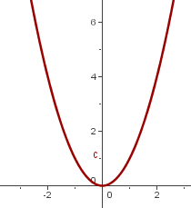
y = x²
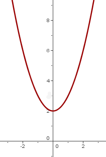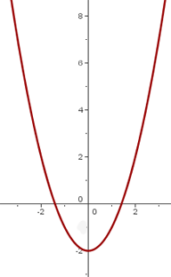
y = x² +2 y = x² −2
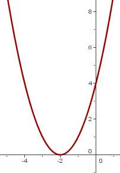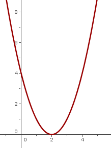
y = (x + 2)²y = (x − 2)²
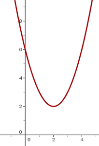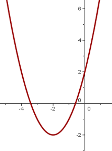
y = (x − 2)² + 2 y = (x + 2)² − 2
2
Find the vertex and determine the equation of the axis of symmetry for the following parabolas:
1. y = (x − 1)² + 1
V = (1, 1) x = 1
2. y = 3(x − 1)² + 1
V = (1, 1) x = 1
3. y= 2(x + 1)² − 3
V = (−1, −3) x = −1
4. y= −3(x − 2)² − 5
V = (2, −5) x = 2
5. y = x² − 7x −18
V = (7/2, −121/ 4) x = 7/2
6. y = 3x² + 12x − 5
V = (−2 , −17 ) x = −2
3
Determine, without graphing, how many x-intersepts the following parabolas have:
1. y = x² − 5x + 3
b² − 4ac = 25 − 12 > 0 two x-intercepts
2. y = 2x² − 5x + 4
b² − 4ac = 25 − 32 < 0 No x-intercept
3. y = x² − 2x + 4
b² − 4ac = 4 − 4 = 0 One x-intercept
4. y = −x² − x + 3
b² − 4ac = 1 + 12 > 0 Two x-intercepts
4
Graph the following quadratic functions:
1. y = −x² + 4x − 3
1. Vertex.
xv = − 4/ −2 = 2 yv = −2² + 4· 2 − 3 = 1 V(2, 1)
2. x-intercepts.
x² − 4x + 3 = 0
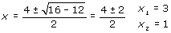 (3, 0) (1, 0)
3. y-intercept.
(0, −3)
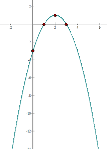
2. y = x² + 2x + 1
1. Vertex
x v = − 2/2 = −1 y v = (−1)² + 2 · (−1) + 1= 0 V(−1, 0)
2. x-intercepts.
x² + 2x + 1= 0
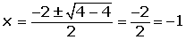 Coincides with the point: (−1, 0)
3. y-intercept.
(0, 1)
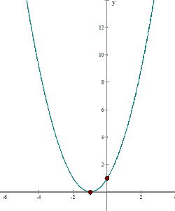
3. y = x² + x + 1
1. Vertex.
xv = −1/ 2 yv = (−1/ 2)² + (−1/ 2) + 1= 3/4
V(−1/ 2, 3/ 4)
2. x-intercepts.
x² + x + 1= 0
1² − 4 < 0 No points.
3. y-intercept.
(0, 1)

5
A quadratic function has an equation in the form y = x² + ax + a and passes through the point (1, 9). Calculate the value of a.
9 = 1² + a· 1 + a a = 4
6
The quadratic equation y = ax² + bx + c passes through the points (1,1), (0, 0) and (−1,1). Calculate the value of a, b and c.
1 = a · 1² + b · 1 + c
0 = a · 0² + b · 0 + c
1 = a · (−1)² + b · (−1) + c
a = 1 b = 0 c = 0
7
A parabola has its vertex at the point V (1, 1) and passes through the point (0, 2). Find its equation.
The value of the x coordinate of the vertex is 1.
1 = −b /2 a b = −2a
y = ax² + bx + c
f(0)=2
2 = c
f(1) = 1
1 = a + b + 2 1 = a −2a + 2
a = 1 b = −2
y = x2 − 2x + 2